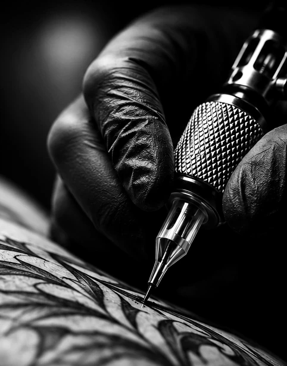
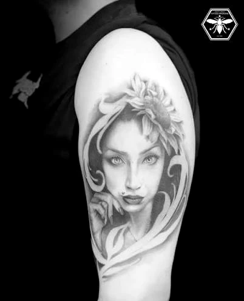
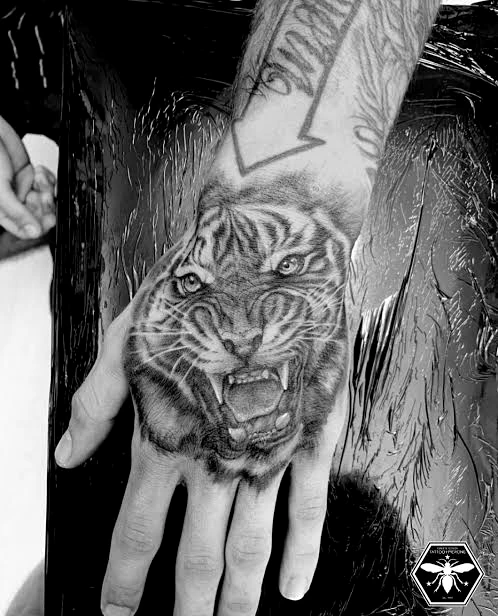
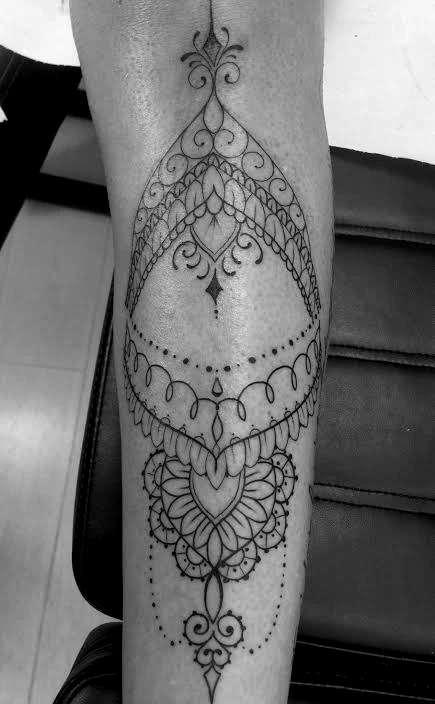
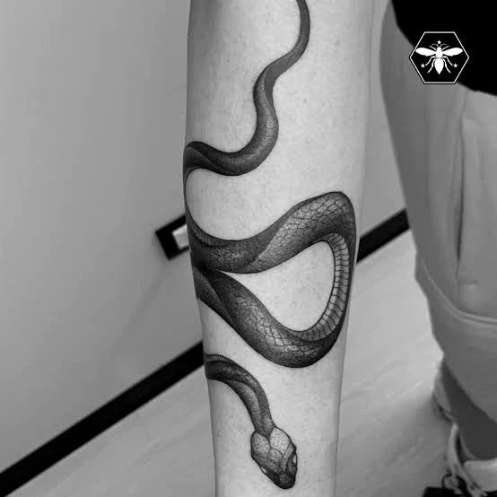
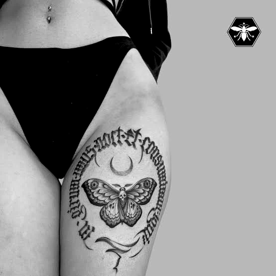

Dal 1999
ORESTECOSCIA
TATTOO & PIERCING
BLACKWORK / FINELINE / LETTERING /
PIERCING / MICRODERMALS

//L’artista
ORESTE
COSCIA
Oreste Coscia è un tatuatore e piercer attivo dal 1999. Realizza tatuaggi in stile blackwork, fineline e lettering, e si occupa di piercing e microdermals.
//I lavori
I LAVORI
BLACKWORK FINELINE LETTERING PIERCING MICRODERMALS





Orari
- LUN
- 09:30 — 17:30
- MAR
- 09:30 — 17:30
- MER
- CHIUSO
- GIO
- 09:30 — 17:30
- VEN
- 09:30 — 17:30
- SAB
- CHIUSO
- DOM
- CHIUSO
APERTI A COLLABORAZIONI GUESTS.
STUDIO AUTORIZZATO ASL
//Strumentazione sterile monouso e inchiostri certificati, atossici e ipoallergenici.
Recensioni Google
Leggi le recensioni
La tua prossima storia
comincia qui.